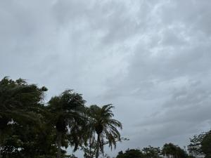
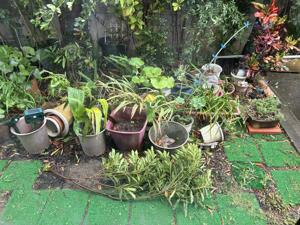
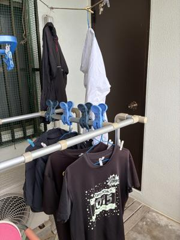

うるがいの話 ある日
最新: 防風林【うるがいの話 ある日】とは 一日だけのプログです
『うるがいの話』の最新一日だけのプログで、通信料が少なく経済的だ。カニの画像をクリックすると全ての日付が載る『うるがいの話』サイトを表示します
|
|
【うるがいの話】 うるがい(ｳﾙｶﾞｲ urugai)とは、『もずくがに』の名前でとても大きくなります。 |
|---|---|
|
|
【カミマヤーの話】 猫のことを方言でマヤーといいます。カミマヤー（kamimayaa）とは、神の猫のことです。 |
|
【たながぁの音楽】 たながぁ（ﾀﾅｶﾞｰ tanagaa）とは手長えびのことで、何種類かあり大きいのは車 エビぐらいになります。 |

|
【ぶながぁの話】 ぶながぁ(ﾌﾞﾅｶﾞｰ bunagaa)とは、赤い髪の毛、赤い身体、そして身長は１ｍ２０ｃｍ ぐらい、川の蟹を食べているの目撃された。場所は沖縄県国頭郡大宜味村のと ある村僕の隣近所に住んでいる爺さんから、聞いた話です。 |
|
|
【ギーマの話】 ギーマ(giima)とは、山原の里山に咲くスズランに似た、 花を付けます。実は食べられます、 気が付くと口の周りが紫になっています。 |
2026年07月11日 (土）防風林
18:01

家の周りには、木がかなりある。防風林になっているようだ、下
は強風で折れたホルトの木の枝である。

よもや、暴風警報がでると思っていなかった。ジョギング途中に
警報が発令された、確かに風は強く場所によっては進むのもヤバ
イ状況もあったが。警報がでたが、玄関ドアの近くに置いてある
鉢植えは、倒れるの防ぐため別の場所に移動しなかった。朝早く
玄関を開けると、倒れていた。油断してた。
サッシなんかない、昔の山原では台風が来ると雨戸に、板を被せ
釘で固定した。新築の家では、標準では雨戸はないが山原育ちの
私は、オプションでアルミ製の雨戸を備え付けていた。当初、隣
近所には、雨戸を備えている家はなかったです。そのうち、隣近
所の２軒は防犯や、西日防止のため雨戸をつけました。大型台風
の場合は、その雨戸を閉めますが、今回は締めませんでした。
コドモは、今日の２３時２０分着の飛行機で帰る予定です。いま
のところ、１５時３０分着までは欠航、それ以降は天候調査とな
っています。どうなるでしょうか・・・、１６時過ぎ、欠航決定
コドモは、明日の飛行機で帰ると連絡がありました。

ベランダには、雨が入り込んでません。二日分のジョギングウェ
アを干しました。きのう、部屋から、見えるマンションでベラン
ダに洗濯物を干している部屋がありました。えー？と思いました
が、ようは風向きなんですよ。暴風警報がでても